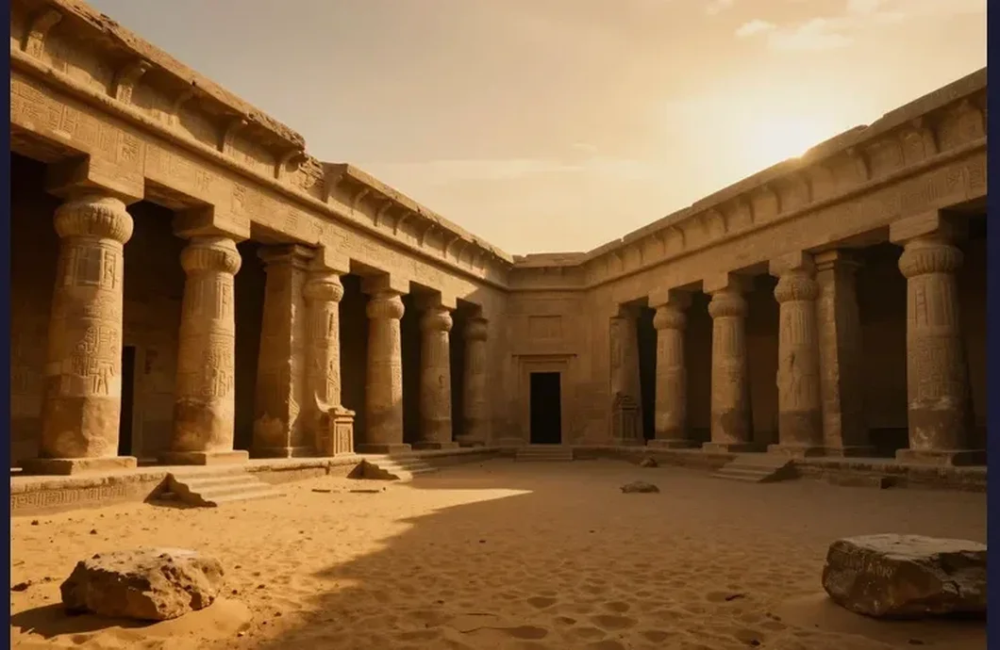

Cleopatra's Lost Tomb: Where Is Egypt's Last Queen Buried?

It was August 12, 30 BC, in Alexandria, Egypt. Cleopatra VII, the last pharaoh of Egypt, died. She was a brilliant queen who spoke many languages. She had charmed Julius Caesar and Mark Antony. She had ruled Egypt for twenty-one years and called herself the living form of the goddess Isis.
The ancient writers say she died by her own hand. How she did it is still debated. The Roman who had beaten her would soon rename himself Augustus. He had promised that she could be buried with dignity.
The Greek historian Plutarch wrote a little over a century after her death. He said Octavian “gave orders that her body should be buried with that of Antony in regal and splendid fashion.” The Roman historian Suetonius agreed. He wrote that Augustus “allowed them both the honour of burial, and gave orders that their tomb should be made and finished.”
So the queen and her love were laid to rest together, as they had wished. Their tomb was somewhere in or near Alexandria. This shining city on the Mediterranean Sea had been the center of the Greek-speaking world for three centuries.
Then, at some point in the centuries that followed, the tomb vanished. No trace of it has ever been found. No ancient traveler wrote about visiting it after the first century. No medieval pilgrim described where it was.
The grave of two of the most famous people of the ancient world has been lost for more than two thousand years. One was a queen whose name stands for beauty, power, and sadness. The other was a Roman general who once controlled half the known world.
The mystery of Cleopatra’s tomb is more than a missing grave. It shows how one of the greatest cities of the ancient world was lost. Alexandria was a marvel of Greek-style civilization. It had the famous Library of Alexandria and the tall Pharos Lighthouse, one of the Seven Wonders of the Ancient World. It also had a royal quarter of palaces, temples, and monuments that matched anything in Rome or Athens.
But Alexandria was built on soft mud from the Nile delta. Over the centuries, earthquakes, tsunamis, and sinking land pulled whole parts of the city under the sea. The royal quarter now lies under about 16 feet of water. That includes Cleopatra’s palace on the island of Antirhodos. Another 16 feet or more of sediment covers it.
These facts come from the underwater archaeologist Franck Goddio, who has surveyed the bay of Alexandria for more than 25 years. The same forces that destroyed the royal quarter may have destroyed or buried Cleopatra’s tomb. But the tomb may still be out there, waiting to be found.
The search for her final resting place has become one of the most passionate and disputed quests in archaeology. It has brought exciting finds under the sea and bitter arguments among scholars. It also brought a Dominican lawyer turned archaeologist named Kathleen Martinez. She has staked her career on a theory that most Egyptologists reject. An Egyptologist is an expert on ancient Egypt.
To see why the tomb matters, we should know the woman who lies in it. Cleopatra VII Philopator (69–30 BC) was the last active ruler of the Ptolemaic Kingdom of Egypt. A general of Alexander the Great founded that dynasty after Alexander died in 323 BC.
The Ptolemies were Greek. For nearly three centuries, they ruled Egypt from Alexandria. The court spoke Greek, while the Egyptian people spoke their own language.
Cleopatra stood out even in this mixed-up royal family. She was the first Ptolemaic ruler to learn the Egyptian language. She presented herself as the new birth of the goddess Isis, the Egyptian mother goddess linked with magic, fertility, and rebirth.
She was, by all accounts, very clever. She spoke at least nine languages. She knew mathematics, philosophy, and astronomy. She was also a sharp politician who moved through the dangerous world of Roman politics with great skill.
Her partnership with Mark Antony, one of the three most powerful men in Rome, was both a love story and a political team. It was a threat to the Roman Republic. Together they controlled the eastern half of the Mediterranean. Antony had his Roman legions, and Cleopatra had huge wealth and the riches of Egypt, the breadbasket of the ancient world.
Their plans put them in direct conflict with Octavian, Julius Caesar’s adopted heir. He controlled the western half of the Roman world. The final clash was the Battle of Actium on September 2, 31 BC. Octavian’s fleet, led by his general Agrippa, beat the combined fleets of Antony and Cleopatra off the west coast of Greece.
The defeat was decisive. Antony and Cleopatra fled to Alexandria. Over the next months, Octavian’s forces closed in, and their world fell apart. Antony heard a false report that Cleopatra was dead, and he fell on his sword.
In the most famous version of the story, Cleopatra let an asp, an Egyptian cobra, bite her. The cobra was a symbol of divine royalty. The ancient sources do not agree on how she died. Some say an asp bite, some say poison, and some say both. What is clear is that she chose death over being paraded through Rome in Octavian’s victory march. She had planned carefully to avoid that fate.
People have argued about her death for more than two thousand years. The most famous account is by Plutarch. It says an Egyptian cobra was smuggled into her room in a basket of figs, and she let it bite her. The cobra was sacred to the goddess Wadjet. By dying from its bite, Cleopatra would have claimed the rank of a goddess in death.
Modern experts on poisons doubt this story. Cobra venom causes a painful death over hours, with paralysis and failure to breathe. That does not match the ancient reports that she died quickly and peacefully.
The Roman historian Cassius Dio suggests she may have used a fast poison, perhaps on a hairpin or a poisoned comb. Some scholars think she drank a deadly mixture. The truth may never be known. Octavian’s agents found her already dead, with two small marks on her arm. But no snake was found in the room.
Asp or poison, her death was a carefully staged final act. She was a queen who understood the power of symbols and stories. She died as she had lived, on her own terms.
Our knowledge of the tomb comes almost entirely from a few ancient writers. None of them gives an exact place. The most important is Plutarch, in his Life of Antony. He wrote it around AD 75, about 105 years after the events.
Plutarch says Cleopatra built a “lofty and beautiful” tomb near a temple of Isis. In her last days, she went back and forth between her palace and the unfinished tomb. She brought “her most valuable treasures” there, such as gold, silver, emeralds, pearls, and ivory. He says Octavian, after her death, ordered the tomb finished. He let Cleopatra and Antony be buried together “in regal and splendid fashion.”
The Roman historian Suetonius agrees. In his Life of Augustus, he says Augustus “allowed them both the honour of burial” and ordered the tomb completed. Cassius Dio wrote in the early third century AD. He adds that the tomb’s “upper part next to the roof was not yet fully completed” when Cleopatra died. He says both were “embalmed in the same fashion and buried in the same tomb.”
The geographer Strabo visited Alexandria around 25 BC, just five years after Cleopatra died. He puts her palace on the island of Antirhodos in the eastern harbor. He mentions the tomb but not its exact place. John, Bishop of Nikiu, wrote in the seventh century AD. He also puts the palace on Antirhodos.
Together these sources suggest the tomb stood in or near the royal quarter, close to the palace and the harbor. The “temple of Isis” is a strong clue. Cleopatra linked herself closely with Isis, so a tomb near an Isis temple would fit her religious image.
But none of the sources gives a map point or a street name. And the Alexandria they describe is gone. The royal quarter, the palace, the temples, and the harbors have all been destroyed, rebuilt, sunk, or buried. The modern city of Alexandria has more than five million people. It sits on top of the ancient city like a layer cake of history.
The most dramatic news about ancient Alexandria has come from Franck Goddio, a French underwater archaeologist. He has surveyed the eastern harbor since 1994. His team at the European Institute for Underwater Archaeology (IEASM) has mapped and dug up the sunken ruins of the royal quarter, including Antirhodos, where Cleopatra’s palace stood.
The finds are amazing. There are huge stone columns, pavements, statues, and building bases on the seabed. They lie under 16 to 30 feet of water and mud, and they are well preserved.
Among the finds are the remains of what may be the Timonium. This was a retreat that Mark Antony built for himself near the harbor. It was named after Timon of Athens, a Greek who hated people. The find suggests the royal quarter is largely intact on the seabed. So the tomb, if it was in this area, may survive underwater too.
The French archaeologist Jean-Yves Empereur has worked on his own in Alexandria’s waters. He has found huge stone blocks from the Pharos Lighthouse and hundreds of building pieces from the Ptolemaic period. But neither Goddio nor Empereur has found any sign of Cleopatra’s tomb in the underwater ruins.
The challenge is huge. The harbor is vast, and the layers of mud are deep. A tomb is an underground structure, so it would be especially hard to detect under the seabed. On land, the problem is just as hard. The modern city sits right on top of the ancient one. Digging in the areas that have not sunk is extremely difficult. Much of the ancient city lies under streets and buildings, and under the rubbish of two thousand years of people living there.
The loss of ancient Alexandria is one of history’s greatest examples of a city going under water. The city stood on a narrow strip of land between the Mediterranean and Lake Mariout (Mareotis). The royal quarter lay along the eastern harbor.
Over the centuries, a series of earthquakes and tsunamis hit, including terrible ones in AD 365, 796, and 1303. The land sank and the sea crept in. The island of Antirhodos, where Cleopatra’s palace stood, slipped beneath the waves.
When Goddio began his surveys in 1994, the royal quarter lay hidden under 16 to 30 feet of water. Another layer of sediment covered it. His team has mapped over 2.5 hectares of sunken ruins. They have found palace foundations, harbor works, and hundreds of objects from the Ptolemaic and Roman periods.
These finds confirm that Cleopatra’s Alexandria was not just destroyed. It was swallowed by the sea. The tomb may have shared that fate. If it lay in the royal quarter, it could now be under the Mediterranean, kept safe in the silt but invisible to ordinary digging.
The underwater search has made wonderful finds. But the most disputed search for the tomb has taken place on land. The site is Taposiris Magna, about 45 kilometers (30 miles) west of Alexandria.
The driving force is Dr. Kathleen Martinez, a Dominican archaeologist and criminal lawyer. She gave up a successful law career for what she calls “the case of her life.” She works with the Universidad Nacional Pedro Henríquez Ureña in the Dominican Republic. In 2005, she first said that Cleopatra’s tomb might be at Taposiris Magna.
Her thinking was like a detective’s. She studied the ancient sources and Cleopatra’s personality and her way of planning. She decided that a queen who “always had a Plan A and a Plan B” would not have buried herself in the weak royal quarter of Alexandria. Her enemies could have harmed her remains there.
Taposiris Magna means “Great Tomb of Osiris.” It is a temple complex built under Ptolemy II Philadelphus (about 280–270 BC) for the gods Osiris and Isis. The choice of gods matters. Osiris was the god of death and rebirth. Isis was his wife, and Cleopatra identified herself with her.
Plutarch wrote that Cleopatra built her tomb near a “temple of Isis.” Taposiris Magna was one of the most important Isis temples in the region. Martinez’s idea is that Cleopatra expected defeat. She had her body carried through secret tunnels to a hidden burial room in or under the temple. There she and Antony would lie together forever, in a place holy to the gods she worshiped.
Martinez began digging in 2005. Her team has made a series of finds that keep the theory alive, even as most Egyptologists stay doubtful. In 2008, they found a tunnel cut 35 meters deep into the rock under the temple. In 2010, they uncovered a large burial ground with at least ten mummies, some covered in gold. There were also coins with Cleopatra’s face.
In 2022, they announced a 1,305-meter (4,300-foot) tunnel. It was partly flooded and ran toward the sea, cut deep into the rock under the temple. It held jars and pottery from the Ptolemaic period.
In 2025, Martinez worked with Robert Ballard, the man who found the Titanic. With a team using advanced sonar, she announced a sunken ancient port about 2.5 miles from today’s coast. It lines up with the tunnel. This suggests that Taposiris Magna was once linked to the sea by a network of tunnels and harbors. Such a network could have been used to move a queen’s body in secret.
Still, most Egyptologists and archaeologists doubt that Cleopatra’s tomb is at the site. The best-known critic is Zahi Hawass, the former Egyptian Minister of State for Antiquities Affairs and one of the most influential archaeologists in the world. He has said publicly that nothing proves a link between Taposiris Magna and Cleopatra’s burial. He has also questioned Martinez’s qualifications and methods.
Other scholars point out that the coins are not unusual. Cleopatra’s coins were used all over Egypt in her time and for decades after. Finding them at a Ptolemaic site proves no personal link.
The mummies are interesting, but they are not royal burials. They seem to be the remains of upper-class citizens or priests, not pharaohs or queens. No writing on stone, no papyrus, and no object found at Taposiris Magna names Cleopatra, Antony, or their burial.
The tunnels are fine engineering. But they may have served practical uses, such as water supply, storage, or temple rituals, not burial. Most archaeologists think Cleopatra was buried in Alexandria, in or near the royal quarter, as the ancient writers say. They think the tomb was destroyed or sunk by the same earthquakes that destroyed the royal palace and the lighthouse.
Cleopatra’s tomb is not the only great burial mystery in Alexandria. The city was also the final resting place of Alexander the Great. His body was brought to Egypt after he died in 323 BC. It was placed in a grand tomb that became one of the most famous places of pilgrimage in the ancient world. A pilgrimage is a journey to a holy or special place.
Roman emperors, including Augustus, Caligula, and Caracalla, are recorded as visiting Alexander’s tomb. The Ptolemaic rulers built their own tombs in the same royal burial ground, a landscape of great splendor.
But by the late Roman or early Islamic period, the place of Alexander’s tomb was lost. Medieval travelers said they had visited it, but their stories contradict each other and cannot be checked. No one today knows where Alexander the Great is buried. The same forces that erased his tomb may have erased Cleopatra’s too.
The comparison is sobering. If the tomb of the most famous conqueror in history can vanish in Alexandria, it is no surprise that a queen’s tomb did the same.
The search for Cleopatra’s tomb is one of the most exciting quests in archaeology. It joins the grandeur of ancient history with the newest tools for exploring underwater. The ancient writers tell us that Cleopatra and Mark Antony were buried together in a magnificent tomb near a temple of Isis. It stood in or near the royal quarter of Alexandria.
But the Alexandria they knew has largely vanished. It sank into the Mediterranean, lies under the modern city, or was destroyed by earthquakes and tsunamis. Goddio’s finds in the harbor show a sunken world of palaces and temples. They show that the royal quarter survives under the waves. Meanwhile, Martinez’s digs at Taposiris Magna have turned up tunnels, mummies, coins, and a sunken port that keep her disputed theory alive.
Neither search has yet found proof that would end the debate. The tomb may lie under the mud of Alexandria’s eastern harbor, out of reach of today’s tools. It may lie hidden in a secret room beneath the Osiris temple at Taposiris Magna. It may have been destroyed long ago, its stones carried off for new buildings, its treasures stolen, and its bones scattered.
Or it may be found tomorrow, by a team of divers or a radar survey that sees underground, or by pure luck. That would rank among the greatest finds in archaeology. Until then, Cleopatra’s tomb stays where it has been for more than two thousand years: lost and silent. Where did they lay the last queen of Egypt?
References & Further Reading
Wikipedia: Cleopatra — Comprehensive biography covering her life, reign, relationships, and death
Wikipedia: Alexandria — The ancient city's history, destruction, and archaeological remains
📚 Recommended Reading: Searching for the Lost Tombs of Egypt by Chris Naunton (on Amazon) — As an Amazon Associate, we earn from qualifying purchases.
Editorial note: The search for Cleopatra's tomb is ongoing, with new discoveries at Taposiris Magna announced as recently as 2025. See our Editorial Policy.